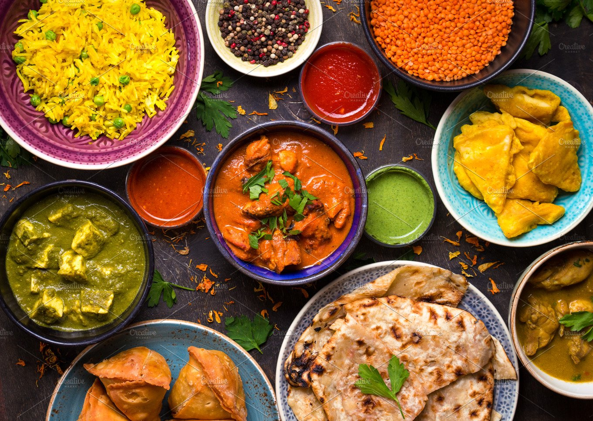

<ion-header translucent="true">
 
  <ion-toolbar color="crimson">
    <ion-buttons slot="start">
      <ion-menu-button style="color: white;"></ion-menu-button>
    </ion-buttons>
    Market Place
  </ion-toolbar>
</ion-header>
<ion-content class="card-background-page">
  <ion-card [routerLink]="['/app/tabs/market/shoplist','suprmrkt']">
    
    <div class="card-title">Super Markets</div>
    <div class="card-subtitle"></div>
  </ion-card>

  <ion-card [routerLink]="['/app/tabs/market/shoplist','fdrst']">
    
    <div class="card-title">Food Restaurants</div>
    <div class="card-subtitle"></div>
  </ion-card>
</ion-content>
